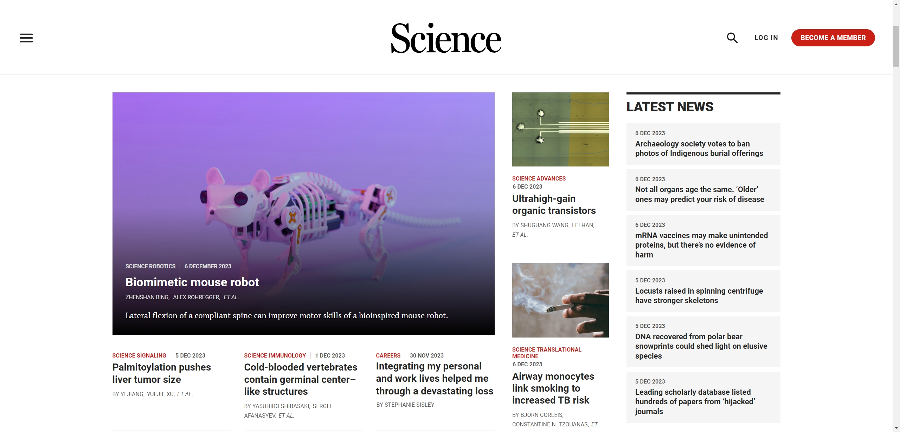
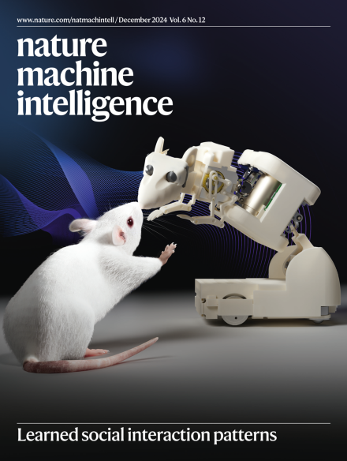
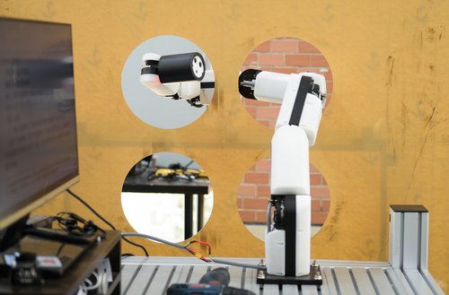
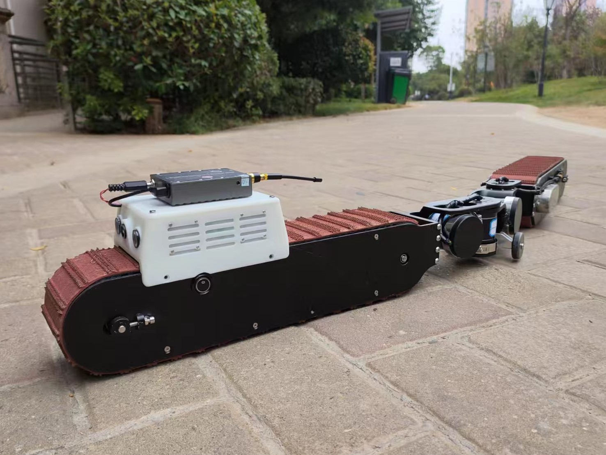
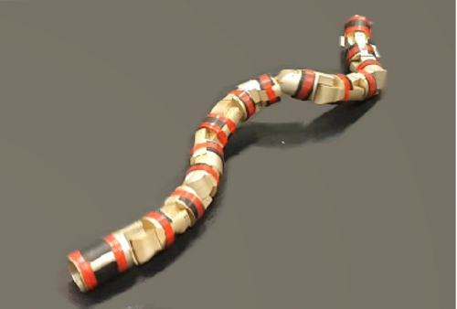

Zhenshan Bing's webpage
Dr. Zhenshan Bing
Postdoc Researcher at Technical University of Munich (TUM)
Chair of Robotics, Artificial Intelligence, and Real-Time Systems
Munich, Germany
My main research is generally about Robotics & AI. My work covers three research areas, namely, bio-inspired robots, RL/meta-RL algorithms for robotics, and brain-inspired navigation algorithms.
In August 2019, I joined the Human Brain Project SP10 Neurorobotics research group at TUM as a post-doc researcher. Previously, I received my Bachelor degree in Mechanical Design Manufacturing and Automation from Harbin Institute of Technology, China in 2013, and my M.Eng degree in Mechanical Engineering (State Key Laboratory of Robotics System) at the same university in 2015. I received my PhD degree in computer science from the Technical University of Munich under the supervision of Prof. Alois Knoll in June 2019.
In 2024, I was a visiting scholar at the Biorobotics Laboratory (BioRob) at École Polytechnique Fédérale de Lausanne (EPFL), under the supervision of Prof. Auke Ijspeert.

Headline of Science website.

Cover of Nature Machine Intelligence

Rat-like robot.

Snake-like robotic arm.

Snake-track robot.

Snake-like robot.
Professional Service
- 2022 - now Associate Editor: IEEE Transactions on Neural Networks and Learning Systems
- 2022 - now Associate Editor: Cyborg and Bionic Systems
- 2021 - now Associate Editor: Frontiers in Neurorobotics
- 2024 Associate Editor: IEEE International Conference on Robotics and Automation (ICRA) 2025
- 2023 Workshop Organizer: IEEE/RSJ International Conference on Intelligent Robots and Systems (IROS) 2023
Awards
- 2024 Fellowship: EuroTech Visiting Researcher Programme, PDF
- 2023 Best paper finalist: 2023 IEEE International Conference on Robotics and Biomimetics (ROBIO)
- 2022 Best paper finalist: 2022 IEEE International Conference on Advanced Robotics & Mechatronics (ARM)
- 2018 Best paper award: 2018 International Workshop on Human Friendly Robotics (HFR)
News
| Dec 5, 2024 | Our recent work “Modulating emotional states of rats through a rat-like robot with learned interaction patterns” has been published by Nature Machine Intelligence! Read it at here! This work is also featured as the cover of the issue in December 2024! |
|---|---|
| Dec 6, 2023 | Our recent work “Lateral flexion of a compliant spine improves motor performance in a bioinspired mouse robot” has been published on Science Robotics! |
| Jul 29, 2022 | Zhenshan Bing is invited to be an Associated Editor of IEEE Transactions on Neural Network and Learning Systems (TNNLS)! |
| Nov 7, 2015 | A long announcement with details |
Selected Publications
-
 Context-Based Meta-Reinforcement Learning With Bayesian Nonparametric ModelsIEEE Transactions on Pattern Analysis and Machine Intelligence (TPAMI) 2024
Context-Based Meta-Reinforcement Learning With Bayesian Nonparametric ModelsIEEE Transactions on Pattern Analysis and Machine Intelligence (TPAMI) 2024 -
 Solving Robotic Manipulation with Sparse Reward Reinforcement Learning via Graph-Based Diversity and ProximityIEEE Transactions on Industrial Electronics 2022
Solving Robotic Manipulation with Sparse Reward Reinforcement Learning via Graph-Based Diversity and ProximityIEEE Transactions on Industrial Electronics 2022 -
 Toward Cognitive Navigation: Design and Implementation of a Biologically Inspired Head Direction Cell NetworkIEEE Transactions on Neural Networks and Learning Systems 2022
Toward Cognitive Navigation: Design and Implementation of a Biologically Inspired Head Direction Cell NetworkIEEE Transactions on Neural Networks and Learning Systems 2022 -
 Robotic Manipulation in Dynamic Scenarios via Bounding-Box-Based Hindsight Goal GenerationIEEE Transactions on Neural Networks and Learning Systems 2021
Robotic Manipulation in Dynamic Scenarios via Bounding-Box-Based Hindsight Goal GenerationIEEE Transactions on Neural Networks and Learning Systems 2021 -
 Complex Robotic Manipulation via Graph-Based Hindsight Goal GenerationIEEE Transactions on Neural Networks and Learning Systems 2021
Complex Robotic Manipulation via Graph-Based Hindsight Goal GenerationIEEE Transactions on Neural Networks and Learning Systems 2021 - Nano EnergyA multi-dimensional tactile perception system based on triboelectric sensors: towards intelligent sorting without seeingNano Energy 2024
-
 Modeling Grid Cell Distortions with a Grid Cell Calibration MechanismCyborg and Bionic Systems 2024
Modeling Grid Cell Distortions with a Grid Cell Calibration MechanismCyborg and Bionic Systems 2024 -
 Modulating emotional states of rats through a rat-like robot with learned interaction patternsNature Machine Intelligence 2024
Modulating emotional states of rats through a rat-like robot with learned interaction patternsNature Machine Intelligence 2024